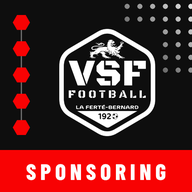

VSF Sponsoring
Suivi des prospects et sponsors du club.
Ouvrir l'application
Installer sur le téléphone ou le PC
- PC (Chrome / Edge) : bouton « Installer », ou icône d'installation dans la barre d'adresse.
- Android (Chrome) : menu ⋮ puis « Installer l'application ».
- iPhone (Safari) : bouton Partager puis « Sur l'écran d'accueil ».